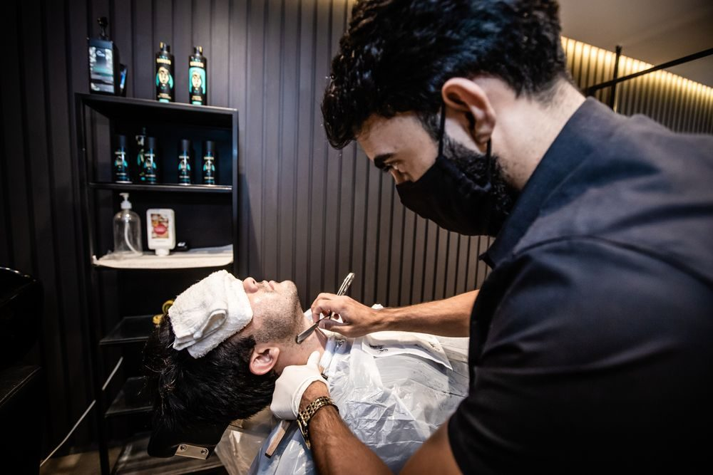

About
Walk-in service only! Our services include traditional men's and boy's haircuts, light trims, scissor haircuts, buzzcuts, skin fades, and beard trims without the need for an appointment. The Village Barber was established in 1980, and continues to serve the greater Sanford area and rural York County, with many clients from Newfield, Alfred, Lyman, Acton, Shapleigh, and of course Springvale. Our barbershop is now conveniently located within Venom Ink Tattoo.
Visit & Contact
Phone
(207) 849-0126
Walk-ins welcome — no appointment needed
Address
Inside Venom Ink Tattoo
751 Main St, Suite A
Sanford (Springvale), ME 04073
Hours
Wed 10 AM–5 PM
Thu 10 AM–5 PM
Fri 8 AM–6 PM
Sat 8 AM–2 PM
Sun–Tue Closed
Hours differ between listings; call ahead to confirm.
Services & Prices

Illustrative photo
- Traditional men's & boys' haircuts
- Light trims
- Scissor haircuts
- Buzzcuts
- Skin fades
- Beard trims
- Walk-ins only, no appointment needed
From the shop's own business description (checked Oct 30, 2026). Prices aren't published online — call for current prices.
Reviews
Sample reviews for this demo — your real customer reviews would go here.
★★★★★“Great cut, friendly atmosphere, and I was in and out quickly. Wouldn't go anywhere else.”
— Sample review
★★★★★“Always leave looking sharp. Clean shop and easygoing conversation every visit.”
— Sample review